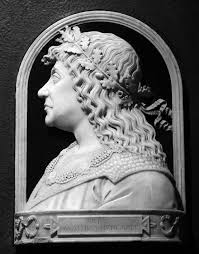

Édesanyja: Szilágyi Erzsébet: A 15. századi magyar történelem meghatározó nagyasszonya.
Édesapja: Hunyadi János: A középkori Magyar Királyság egyik legnagyobb hadvezére,
kormányzója (1446–1453) és törökverő hőse volt.
Hunyadi László: A Cillei Ulrikkal való hatalmi leszámolása után V. László király esküjét megszegve tőrbe csalt. 1457-es budai lefejezése politikai válságot okozott, ami végül öccse, Hunyadi Mátyás királlyá választásához vezetett.
Podjebrád Katalin (1463–1464): Podjebrád György cseh király leánya, gyermekágyi lázban, fiúgyermekkel együtt fiatalon meghalt.
Aragóniai Beatrix (1476–1490): I. Ferdinánd nápolyi király lánya. Bár házasságukból nem született gyermek, a humanista műveltség elterjesztésében nagy szerepe volt.
Corvin János (1473–1504): Edelpeck Borbála boroszlói polgárleánytól született törvénytelen fiú, akit Mátyás elismert és trónörökösnek szánt.
Bár a reneszánsz elsősorban az udvar és az arisztokrácia kultúrája volt, a kor kulturális fejlődése az egész országra hatással volt, és előkészítette a talajt a későbbi századok művészeti fejlődéséhez
Beatrix királyné 1476-os érkezésével fokozódott az itáliai hatás, a budai és visegrádi palota a reneszánsz művészet központjává vált. A király számos olasz mestert (építészeket, szobrászokat, festőket) hívott az udvarba.
Mátyás megalapította az európai hírű, több ezer kötetből álló Corvina könyvtárat, amely a korabeli humanista tudás központja volt.
Az udvarban olyan neves humanisták tevékenykedtek, mint Antonio Bonfini, aki megírta a magyarok történetét, vagy Oláh Miklós.
A reneszánsz stílus (márványfaragványok, freskók) megjelenése mellett a gótika is tovább élt, különösen az egyházi építészetben.
Mátyás volt az egyik első uralkodó Európában, aki állandó hivatásos zsoldoshadsereget tartott fenn, ami biztosította a gyors és hatékony bevethetőséget.
Mátyás jelentős sikereket ért el a cseh trónért vívott harcokban, bár ezek felemás eredményekkel jártak.
A Fekete Sereg egyik legnagyobb fegyverténye III. Frigyes császár legyőzése és Bécs elfoglalása volt.
A sereg eredményesen védte a déli határokat, és számos alkalommal aratott győzelmet a török seregek felett.
Mátyás seregei nemcsak a közvetlen szomszédok ellen harcoltak; Magyar Balázs kapitány vezetésével például Apuliába (Olaszország) is küldött vitézeket.
Kinizsi Pál (1431?–1494) a magyar történelem egyik legismertebb, legendás erejű hadvezére, Mátyás király fekete seregének rettegett parancsnoka, aki egyetlen csatát sem veszített el. Szegény sorból, molnárlegényből emelkedett fel kiváló képességei révén, lett országbíró és temesi ispán. Alakja a népmesékben és Tatay Sándor regényében is a bátorság szimbóluma.
A Fekete sereg Hunyadi Mátyás magyar király által létrehozott és fenntartott, a 15. század második felében működő, jól szervezett, [10.hu] állandó zsoldoshadsereg volt. Európa egyik legjobb haderejének számított, amely gyalogságból, könnyű- és nehézlovasságból, valamint tüzérségből állt.
| Létrehozó | Jelentősége | Elnevezése | Vége |
|---|---|---|---|
| Hunyadi Mátyás | MA korszak legmodernebb európai seregei közé tartozott, nagyban hozzájárult a török elleni védelemhez. | A "Fekete sereg" elnevezés valószínűleg csak Mátyás halála (1490) után vált ismertté, eredete vitatott. | Mátyás halála után a sereg feloszlott, mivel az utódok nem tudták finanszírozni. |
Számos emlékmű, szobor (pl. Kolozsváron) és utcanév őrzi emlékét, a ma7.sk cikk szerint a Felvidéken is több emlékmű áll.
A néphagyomány szerint álruhában járta az országot, hogy megvédje a szegényeket a zsarnokoskodóktól.
A reneszánsz kultúra meghonosítója, a híres Corvina könyvtár alapítója.